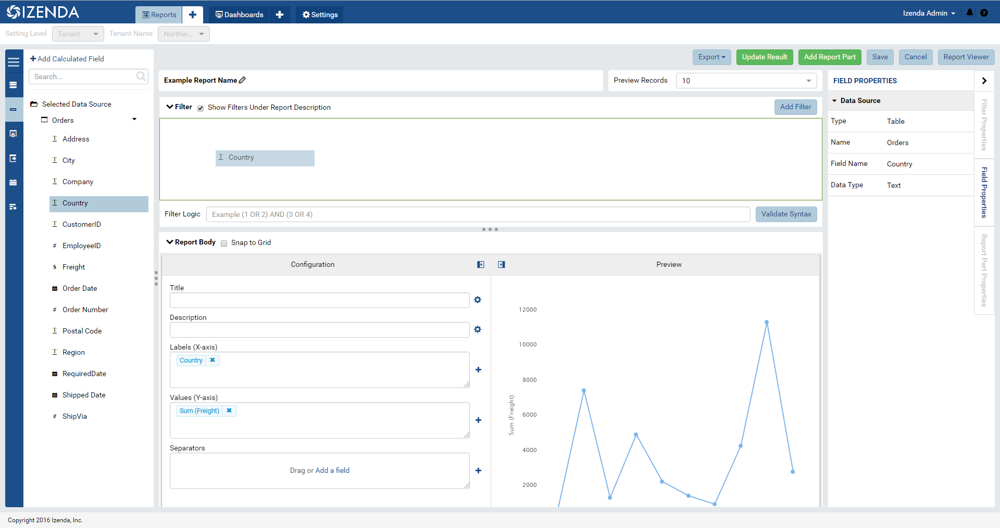
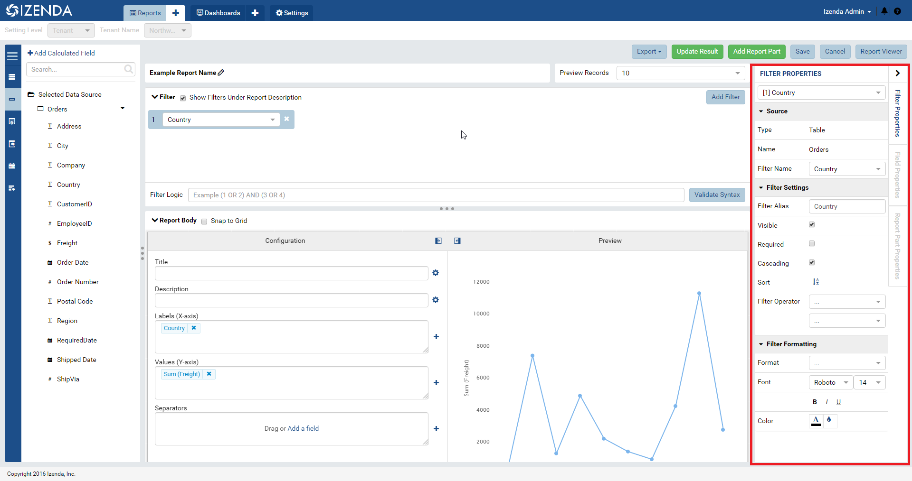
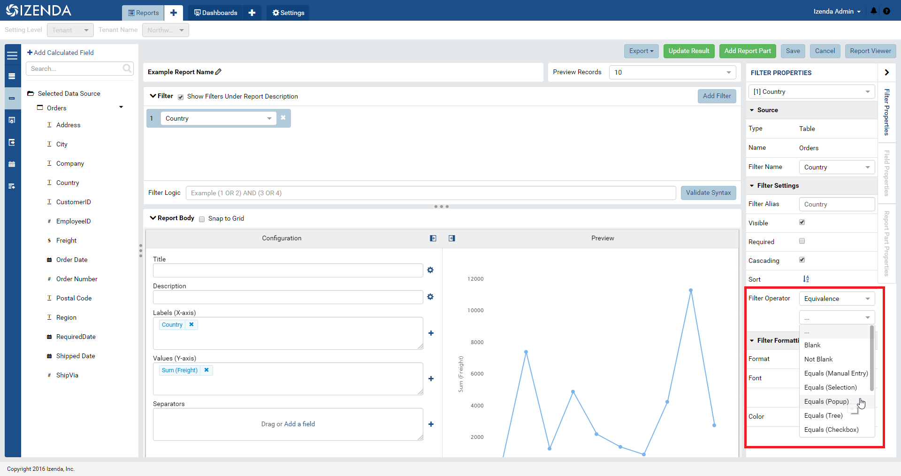
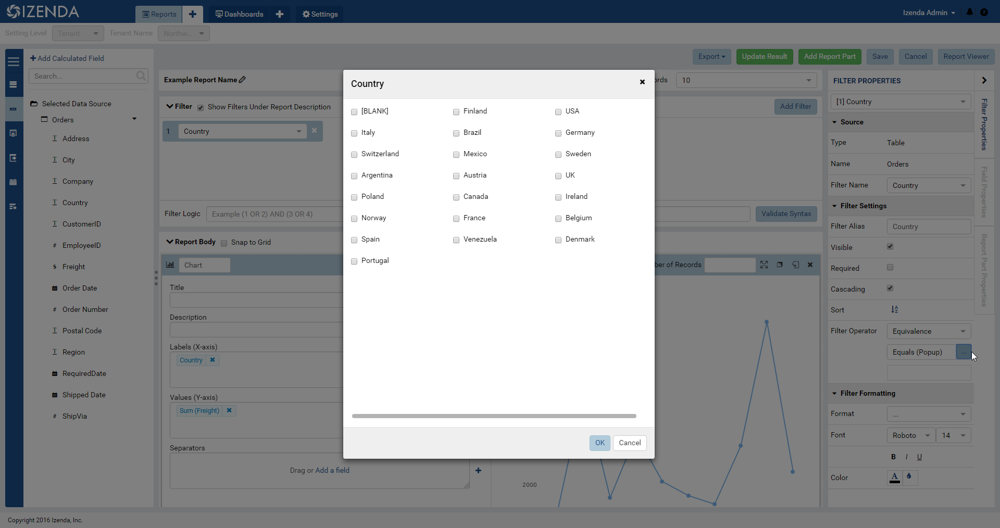
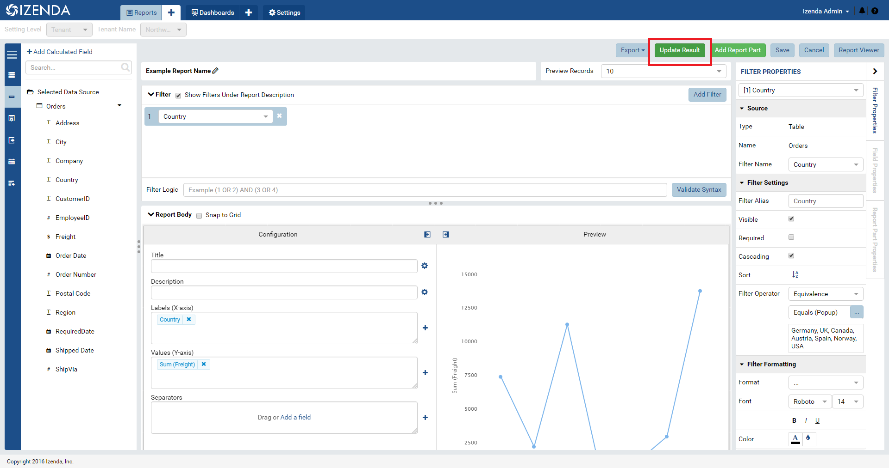
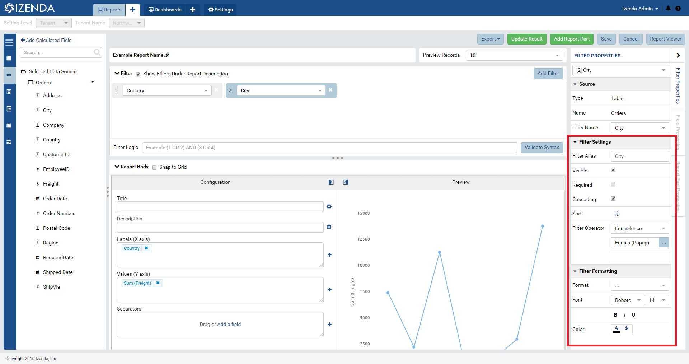
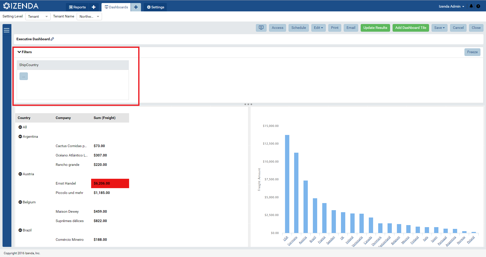
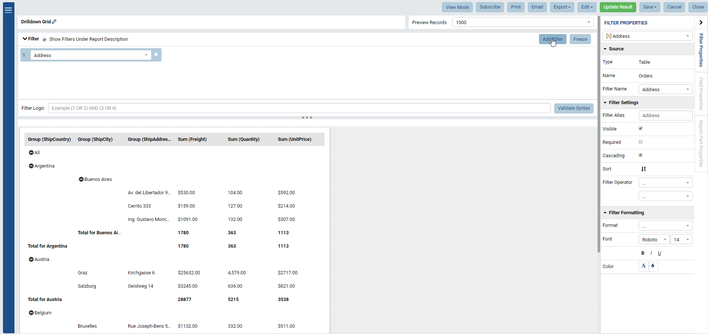

Adding Filters to a Report¶
This page will serve as a guide to new users of the system with the intention of describing the process of adding, customizing, and deploying filters as a part of Izenda’s reporting module. The intention of this guide is to equip users with the tools necessary to more easily navigate and utilize the platform.
Note
This page is currently under construction. Please feel free to use the information provided on this page while we continue to refine it for your use.
Adding Filters Through Report Designer¶
To do this, the user would employ the same drag and drop mechanism used for adding data sources to a report part. Simply drag and drop a column from the available data objects into the filter panel at the top of the screen.
In order to follow along with this guide, the user must have access to the Report Designer module within Izenda. Once data sources are selected for report building purposes, and the user has already created their desired report parts, the user can then begin adding Filters to the report.
Get to a point in the design process where data sources have been selected and a report part has been constructed.
Using the same mechanism for adding data sources to a report part, simply drag and drop data objects into the filter area as showing in Fig. 396.
Fig. 396 Field being dragged and dropped into place
With the filter selected, the Filter Properties Panel is enabled. This is where further configuration is necessary to have the filter operational. (See Fig. 397)
Fig. 397 Filter properties panel
Select a equivalence type and a selection mechanism for users to interact with prior to a filter running. (Fig. 398)
Fig. 398 Filter properties panel
Once the selection mechanism in place, the filter will be available for anyone with access to the full one-page viewer or designer. Depending on the selection mechanism under the filter operator, users will be able to filter down criteria based on what is selected/entered. In this case, we are using the Popup mechanism that opens a window with all of the available values within the field being filtered upon
Fig. 399 Filter properties panel
Either in the report viewer or designer, the user must hit the Update Results button prior to the report filtering down on the selected data.
Fig. 400 Update Results button
If there are multiple filters in the filter panel, their Filter Logic can be adjusted to refine the results set displayed in the report parts displayed below. Additionally, if the cascading flag is checked on a filter, any selected values will be sent to subsequent filters. For example, if USA is selected in the “Country” filter, then only USA cities will show in the “City” filter.
There are additional options in the Filter Properties panel including making a filter required prior to a report running, making it visible for users to interact with, and various basic formatting options.
Fig. 401 Filter properties panel
Filters will be displayed on Reports and Dashboards in the filter panel at the top of the screen. In the case of Dashboards, if every report part contains the same filter using the same field and selection mechanism, it will be displayed at the top of the screen for dashboard level filtering.
Fig. 402 Filter contained on a report
Adding Filters Through Quick Edit¶
Quick edit allows users to make quick adjustments to a report without being able to save over the underlying base report or add any extra data sources to the report. Quick Edit also gives users the ability to manage and add their own custom filters, filter criteria, and filter selection mechanism.
Below is a step by step guide to adjusting filters on a report through the Quick Edit functionality:
Select Quick Edit on a report in which the user has been granted Quick Edit access rights.
Fig. 403 Quick Edit Mode
Use the Add Filter button in order to add a new filter using the already pre-selected data sources for this report.
With a data source selected, use the Filter Properties panel in order to make the proper adjustments for the Filter to act appropriately. This includes selecting the Filter Operator and Selection Mechanism. (See Fig. 397 above).
With the filter in place, add some filter criteria.
Make sure to utilize the Update Results button to adjust the report’s values prior to moving on or saving. (See Fig. 399 above).